Figure 1. This work focuses on an underexplored task of Multi-shot Video Object Segmentation (MVOS). As shown in (a), the significant variations in object appearance, spatial location, and background across shots pose major challenges in MVOS. We introduce Cut-VOS, a challenging MVOS benchmark with high transition diversity to support this task. As shown in (b), on Cut-VOS, SAM2-B+ exhibits a 21.4% \( \mathcal{J}\)&\( \mathcal{F}\) drop compared to the challenging single-shot MOSE dataset and a 16.4% \( \mathcal{J}\)t drop compared to YouMVOS†. Upon the observation, we propose a new transition-specific segmentation model, Segment Anything Across Shots ( SAAS) which effectively segments objects in multi-shot videos.
Abstract
This work focuses on multi-shot semi-supervised video object segmentation (MVOS), which aims at segmenting the target object indicated by an initial mask throughout a video with multiple shots. The existing VOS methods mainly focus on single-shot videos and struggle with shot discontinuities, thereby limiting their real-world applicability. We propose a transition mimicking data augmentation strategy (TMA) which enables cross-shot generalization with single-shot data to alleviate the severe annotated multi-shot data sparsity, and the Segment Anything Across Shots (SAAS) model, which can detect and comprehend shot transitions effectively. To support evaluation and future study in MVOS, we introduce Cut-VOS, a new MVOS benchmark with dense mask annotations, diverse object categories, and high-frequency transitions. Extensive experiments on YouMVOS and Cut-VOS demonstrate that the proposed SAAS achieves state-of-the-art performance by effectively mimicking, understanding, and segmenting across complex transitions.
1. Cut-VOS Benchmark
Benchmark Statistics
| Dataset | #Videos | #Objects | #Masks | #Shots | Trans. Frequency | Obj. Categories | Available |
|---|---|---|---|---|---|---|---|
| YouMVOS-test | 30 | 78 | 64.6K | 2.4K | 0.222/s | 4 | ✖ |
| Cut-VOS (Ours) | 100 | 174 | 10.2K | 648 | 0.346/s | 11 | ✔ |
Table 1: The basic statistics for the Cut-VOS benchmark.
As shown in Table 1, the Cut-VOS benchmark contains 100 videos, 174 annotated objects, and 10.2K high-quality masks overall. Compared to the previous MVOS dataset YouMVOS, Cut-VOS contains more videos (100 vs. 30) and objects representing more diverse scenarios, and carefully screened, multiple types of transitions with a 1.6 times higher frequency reaching 0.352/s. Besides, different from YouMVOS which solely focus on actors especially human subjects, Cut-VOS contains 11 different categories and 40+ subcategories across both actors and static objects, making it more in-the-wild.
Diverse Object Categories
Figure 2:
The Comparison of object categories. Cut-VOS contains
4 categories
in YouMVOS and 7 new categories.
Adult
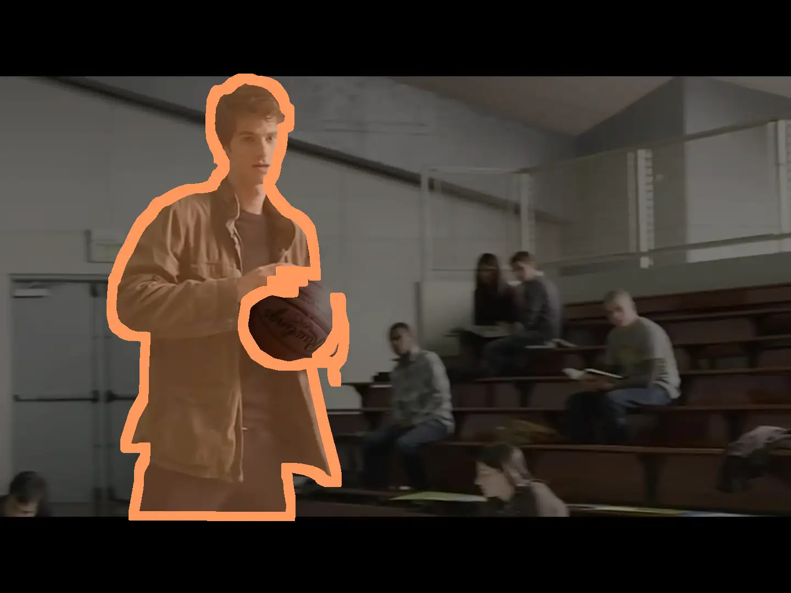Children
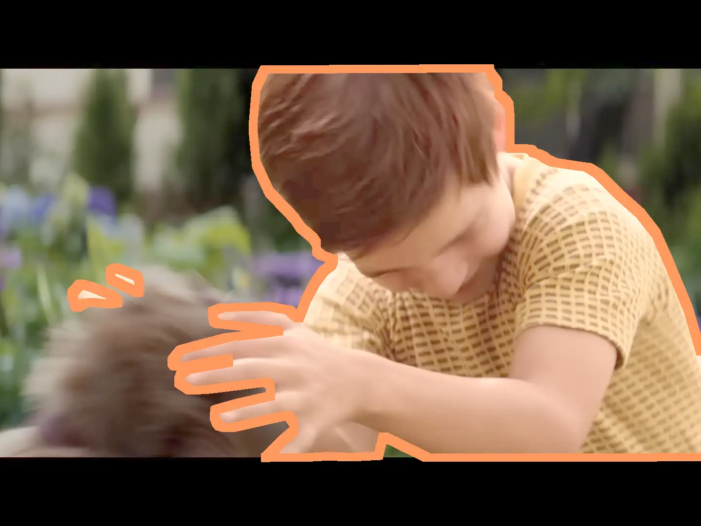Animal
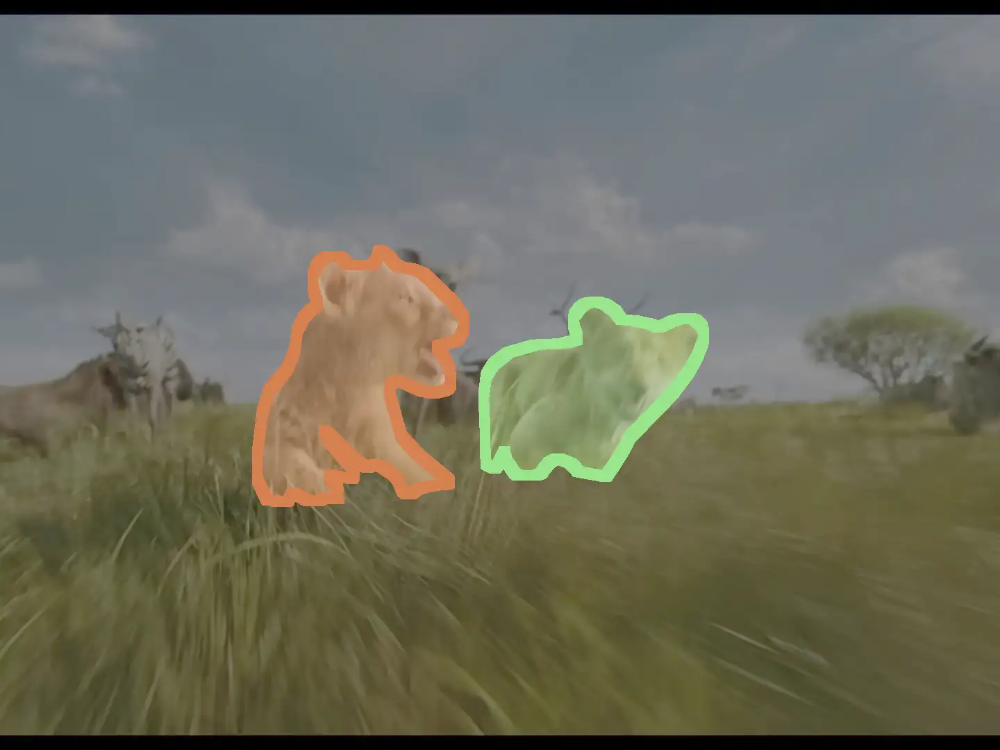Vehicle
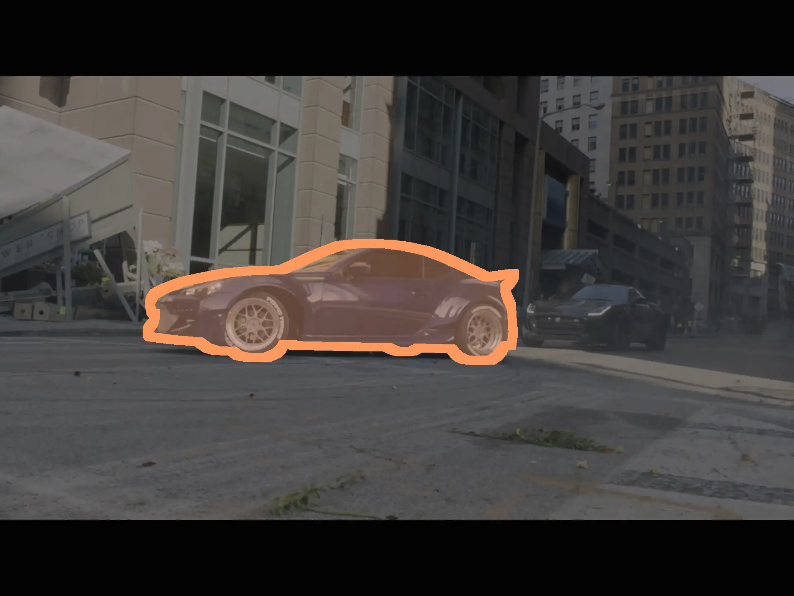Tool
Food
Architecture
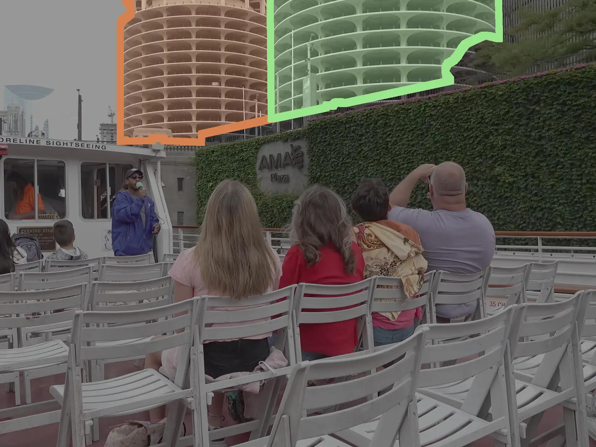Furniture
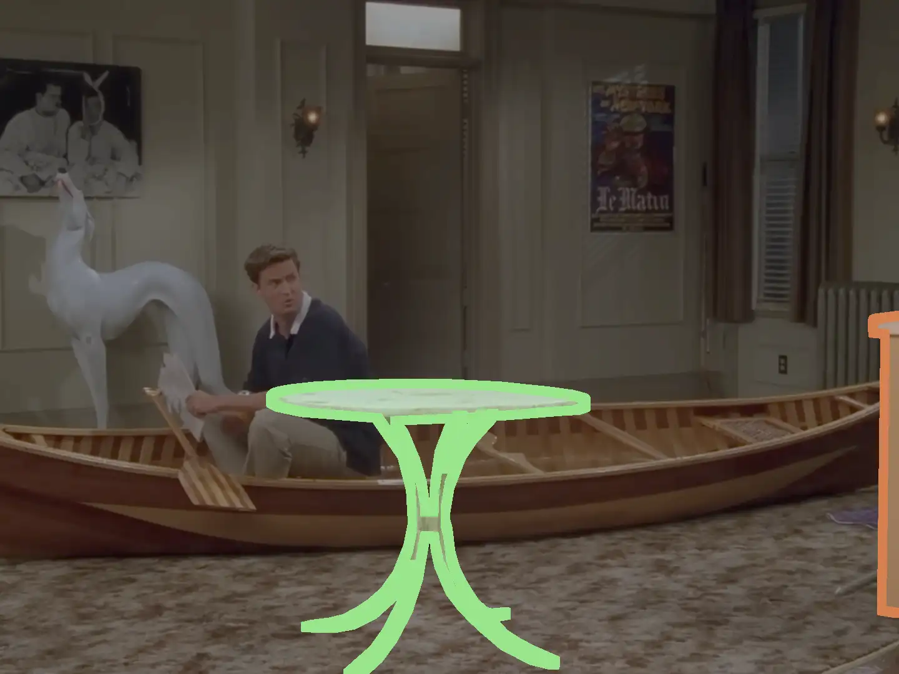Figure 3: Examples of diverse object categories in the Cut-VOS benchmark.
Transition Types Analysis
Cut away
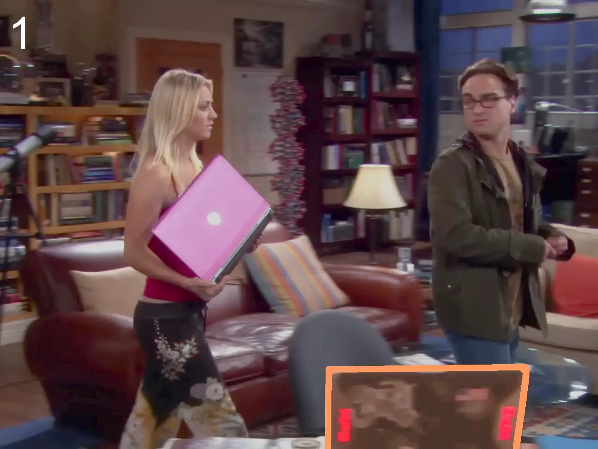Cut in
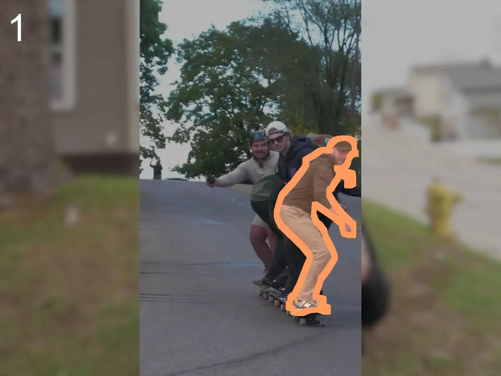Delayed Cut in
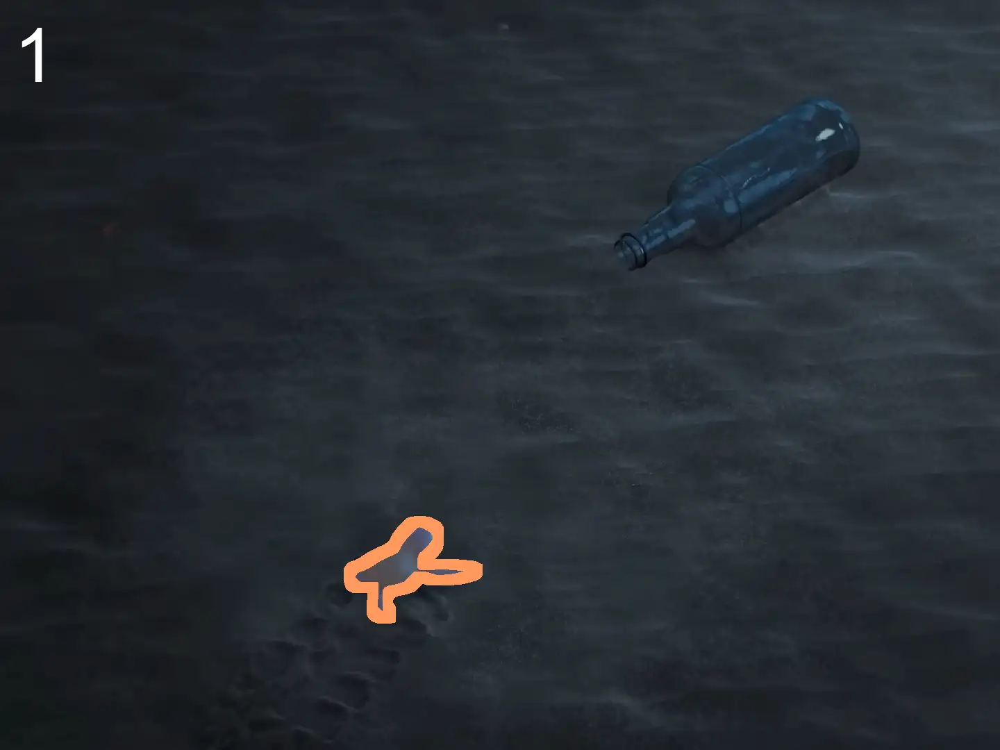Scene Change
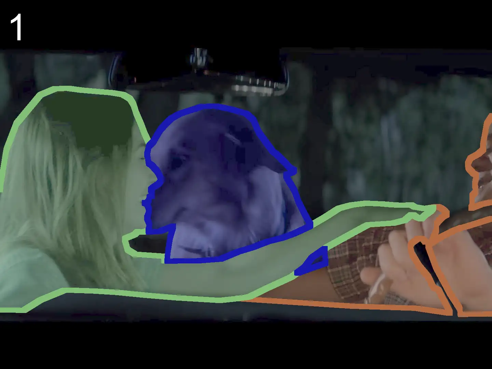Pitch
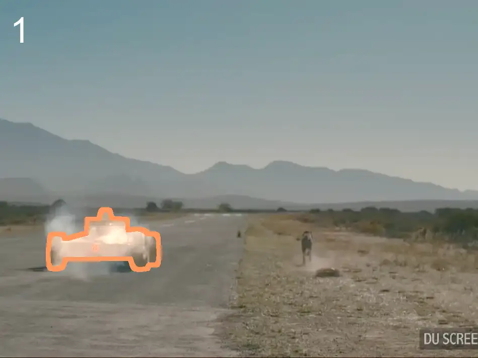Horizon
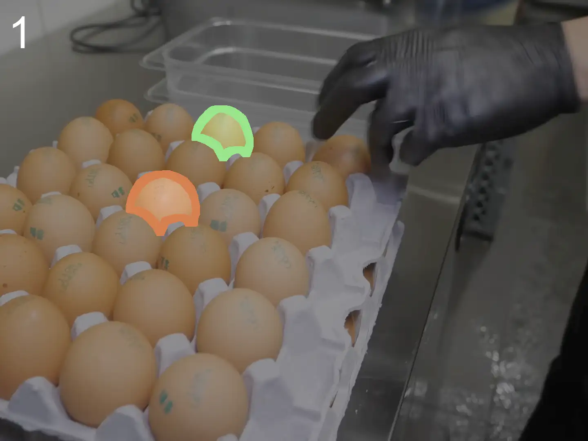Close-up View
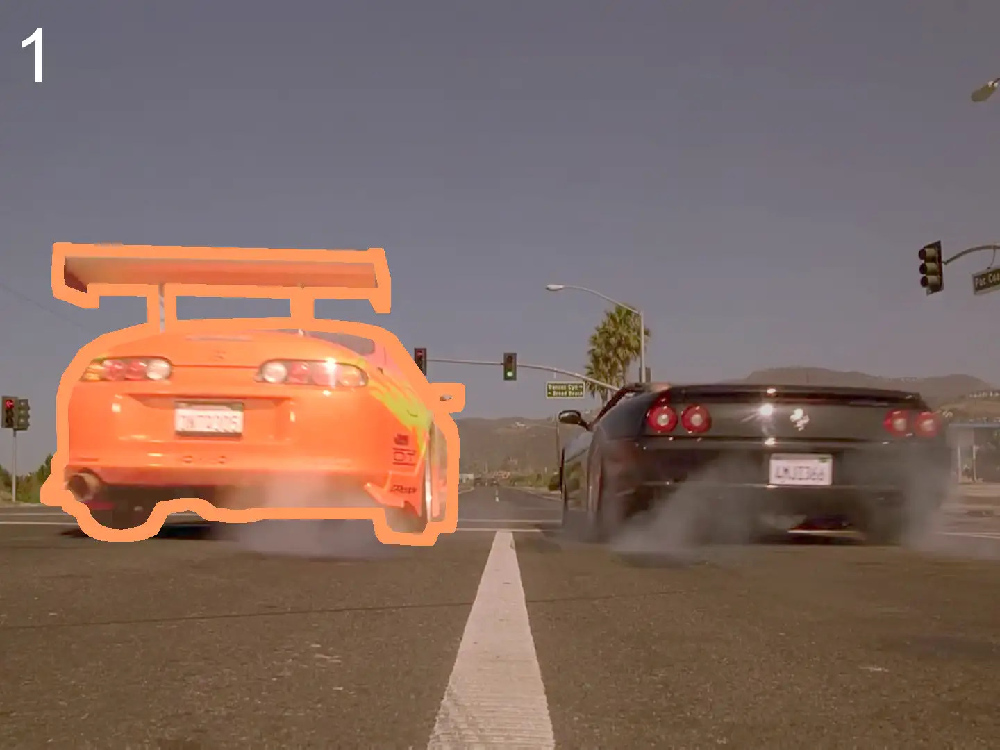Distant View
Figure 4: Visualization of 8 significant transition types.
The relevant analysis and statistics are involved in our paper and technical appendix. Clike here to access our paper on arXiv.